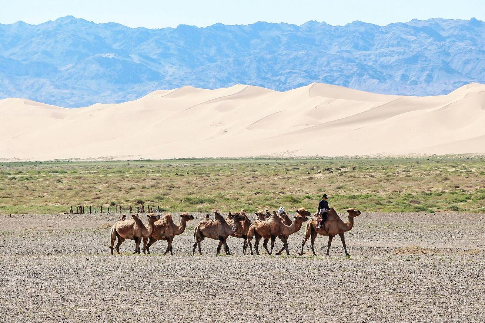
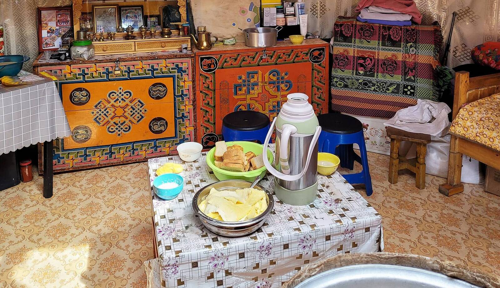
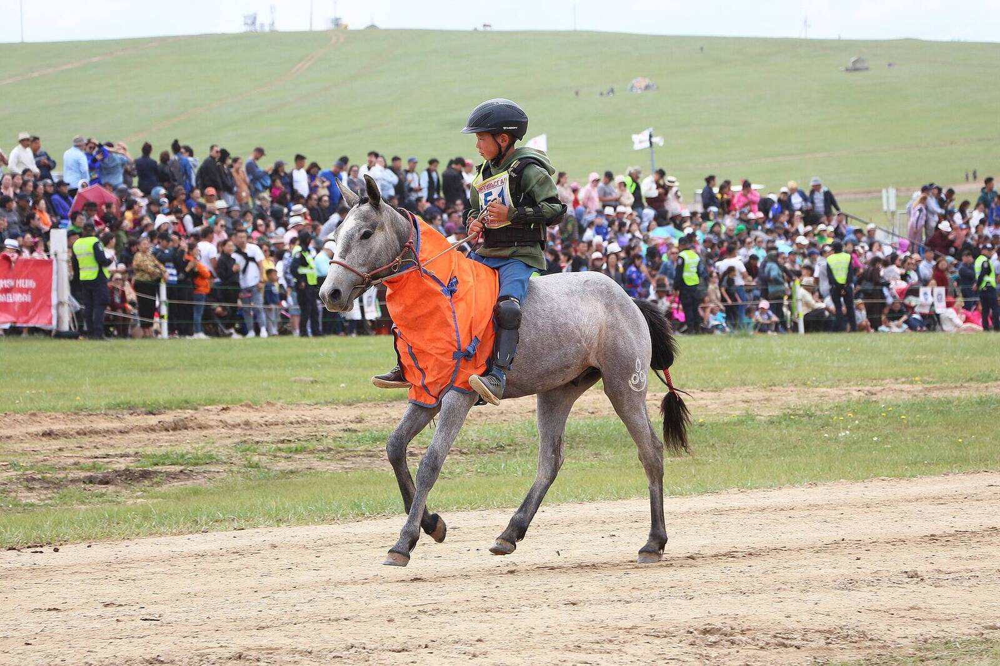
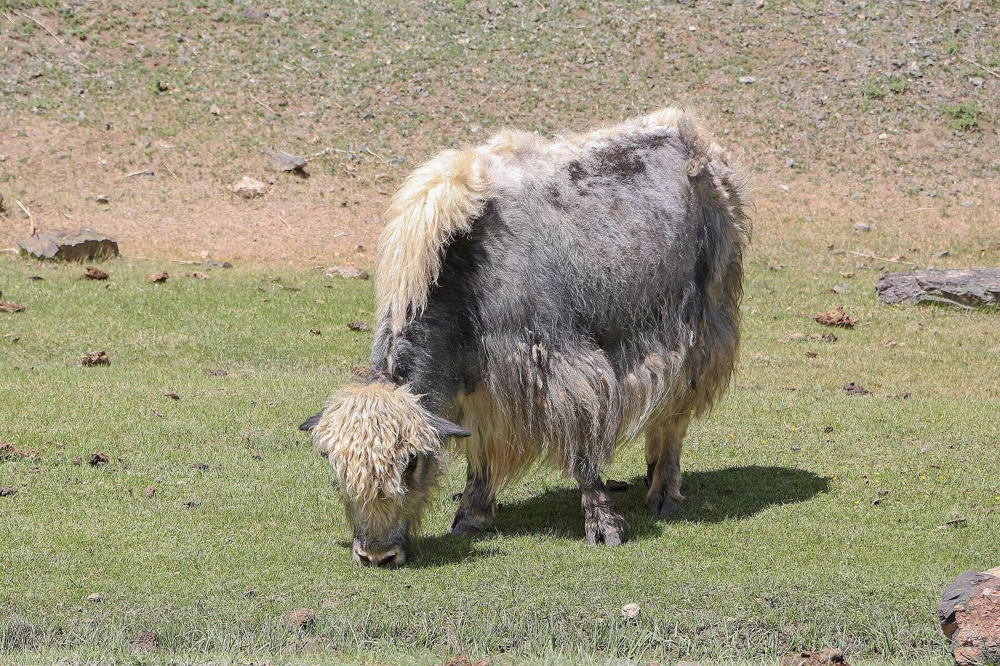
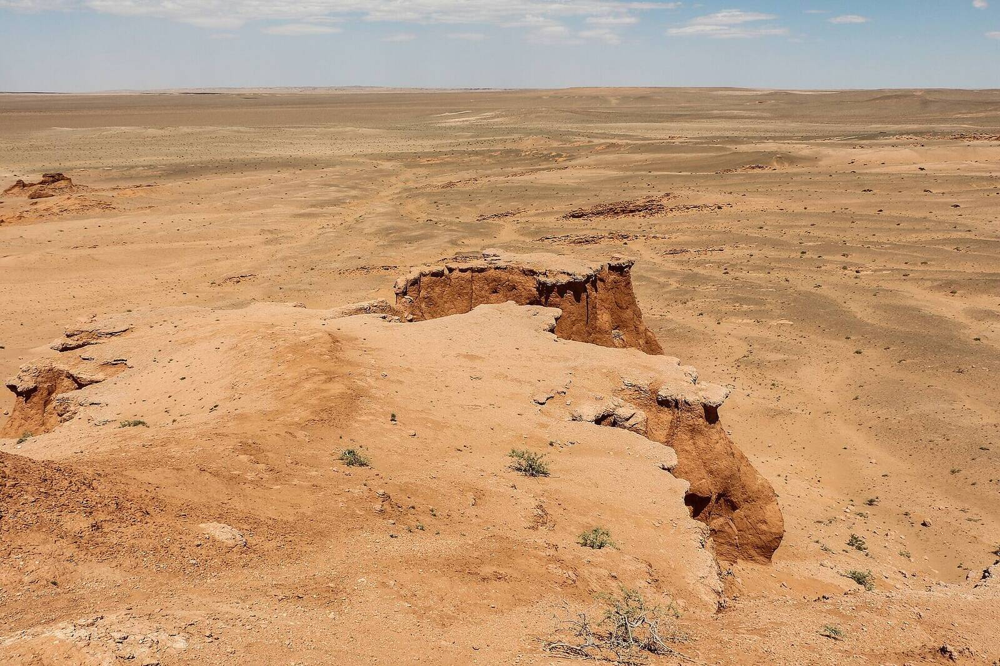
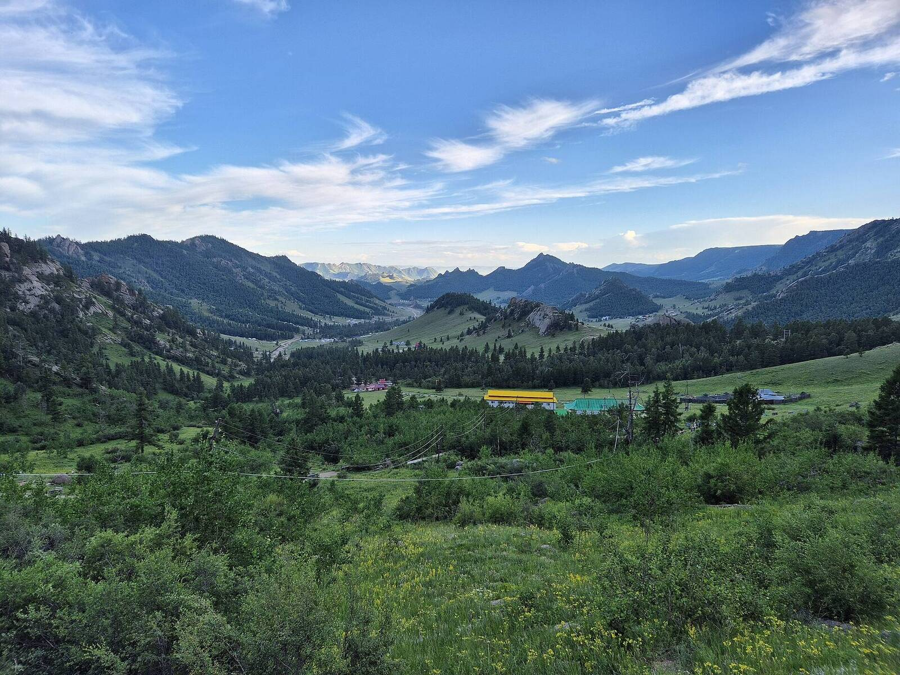
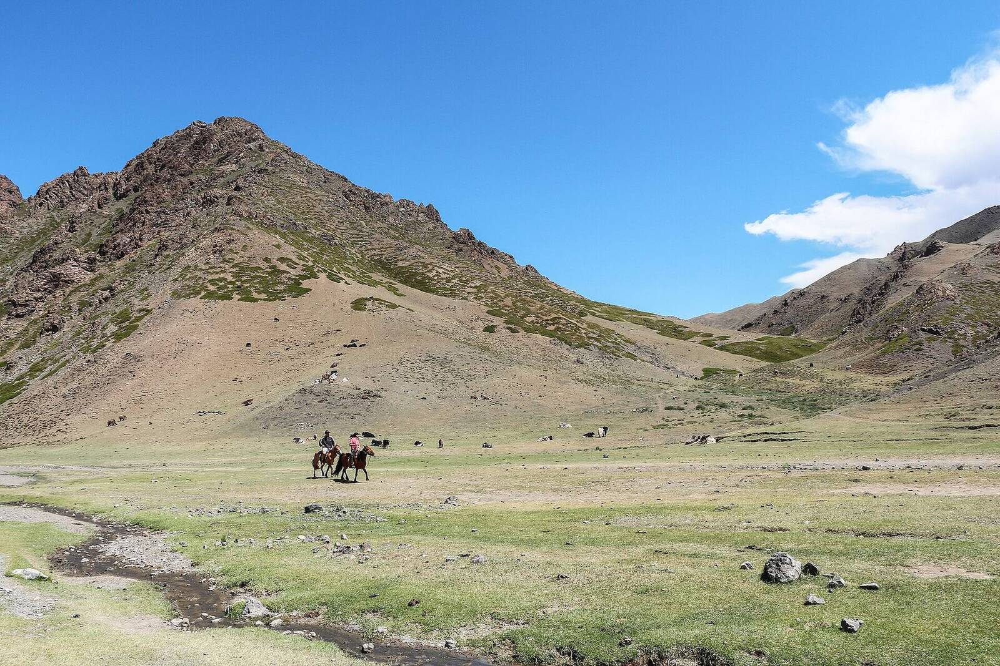

43.78° N · 102.30° E · Khongoryn Els, Gobi
Under the eternal blue sky
Small-group and private journeys across Mongolia, led by Mongolian guides who grew up on the steppe. Sleep in family gers, ride with herders, and cross the Gobi by camel.
- 1,564,116 km²of open country
- ~2 peopleper square kilometre
- ~250 daysof sunshine a year
- 8 guestsmaximum per group
Routes we know by heart
Every itinerary runs as a small-group departure or as a private trip on your dates. All include a Mongolian guide, a driver, meals outside the city and every night's stay.
Prices are per person, twin share, in US dollars, excluding international flights. Private departures are quoted on request.
From the Altai glaciers to the Gobi dunes
Mongolia is roughly three times the size of France, with only a few thousand kilometres of paved road. Pick a journey to see where it goes.
Twelve months, four very different countries
Ulaanbaatar is the coldest capital in the world, yet summer days on the steppe are warm and long. Choose a month to see the weather and what's happening.
Bars show the average daily low to high in Ulaanbaatar, °C. The Gobi runs warmer in summer; the north and the Altai run colder.

The door of a ger always faces south
Guests sit on the west side, the stove burns at the centre, and there is always milk tea. On our journeys you spend nights with families we have known for years. You help with the milking, learn to saddle a horse, and pay your hosts directly and fairly.
Local from the first email to the last airport transfer
Guests at most
One vehicle, one guide, one table at dinner. Small groups leave less of a footprint on fragile grassland.
Mongolian guides
English-speaking guides from Ulaanbaatar, the Gobi and Bayan-Ölgii, trained in wilderness first aid.
Proper vehicles
Land Cruisers and the legendary Russian UAZ van, driven by mechanics who can fix anything on the road.
Support on the ground
Satellite phones on remote routes and an Ulaanbaatar team on call for the whole trip.
Four steps to the steppe
Tell us your dates
Send a short note with when you can travel, who is coming and what you hope to see.
Get a draft itinerary
A planner in Ulaanbaatar replies within one working day with a route, a price and honest advice.
Shape it together
Add a horse trek, swap a camp, slow the pace. A 20% deposit confirms your place.
Land in Ulaanbaatar
Your guide meets you at Chinggis Khaan International Airport and the journey begins.





Good to know before you fly
Still unsure? Our planners answer every question personally.
Do I need a visa for Mongolia?
Citizens of many countries, including the United States, Canada, Japan, South Korea and several European countries, can enter visa-free for a set number of days. Rules change, so check with your nearest Mongolian embassy. If you need a visa, we provide the invitation letter.
How do I get there?
Fly into Chinggis Khaan International Airport (UBN), about 50 km south of Ulaanbaatar. There are direct flights from Seoul, Beijing, Tokyo, Istanbul and Frankfurt, among others. We meet every guest on arrival.
What is a ger camp like?
A ger is a round felt tent heated by a wood stove. Tourist ger camps have proper beds, hot showers and a dining hall. Family stays are simpler, with shared facilities, and are the highlight of most trips.
How fit do I need to be?
Most journeys suit anyone who can walk a few hours a day and sit in a vehicle on rough roads. The Altai Tavan Bogd trek needs good fitness. Horse riding is optional and beginners are welcome.
Can I use cards and my phone?
The currency is the tögrög (MNT). Cards work in Ulaanbaatar; carry cash for the countryside. Mobile coverage reaches most soums (district centres), but not open steppe or mountains.
What about dietary needs?
Traditional food is meat and dairy heavy. Our cooks prepare vegetarian, vegan and gluten-free meals when you tell us in advance.
Tell us about your trip
Share your dates and interests and a planner in Ulaanbaatar will send a tailored itinerary and price. No payment needed to ask.